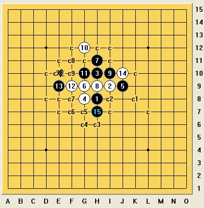
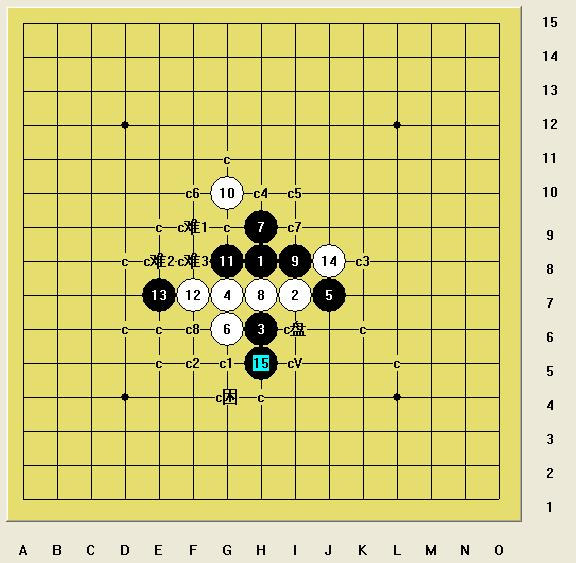

俄谱、寒恒经典的第三种杀法思考（八星级）
首页
习题专区
#1 俄谱、寒恒经典的第三种杀法思考（八星级） 作者：小天元子 发表时间：2009-7-1 12:17:44
虽然RIF下的寒恒地毯了，但山口下的寒恒才刚刚开始，依稀记得几周前我拆寒恒地毯时，曾被这个局面所困惑
=======上图对应的爱五子棋谱代码如下，以便你拆解：========
h8i9h10h9j9g10i8g9
======================================================后来在小棋后和论坛坛友的齐心协力下，弄出了两套胜法，如下
胜法1：
=======上图对应的爱五子棋谱代码如下，以便你拆解：========
h8i9h10h9j9g10i8g9g8j8f9
======================================================胜法1后面的胜法光我的胜法和李洪斌LS的胜法就有两种，因为属于控盘类拆棋，可能还有其他胜法可能
胜法2：
=======上图对应的爱五子棋谱代码如下，以便你拆解：========
h8i9h10h9j9g10i8g9g8j8e9
======================================================据花影说是失落缘的杀法，后由陨落验证必胜
现在我要说的是第三种不同于以上两种的胜法
早上翻俄谱的时候看到了不少老东西，遗憾以前拆寒恒没参考俄谱，今天两相比较老俄谱的胜法和我的胜法差异，发觉不少新奇东西和奇怪思路，颇有收获，也可以说“塞翁失马，焉知非福”了！

这个5手是山口下这个4手的3打，应该也是必胜的，其实通的是这个型的2打，一样的
=======上图对应的爱五子棋谱代码如下，以便你拆解：========
h8i9h10g9j9g8h11h9i10g12g10f9e9j10h7
======================================================这个棋型曾经折磨过我，因为在拆寒恒那路强变化时有一个通型也可以通到这路，但是有盘端，盘端问题可以自己解决

其实就是这路
=======上图对应的爱五子棋谱代码如下，以便你拆解：========
h8i7h6h7j7g6i8g7g8j8h9f7e7g10h5
======================================================证明了这路也是可以必胜的，具体过程有点费时间，如果感兴趣就停下来多思考会。
#2 Re:俄谱、寒恒经典的第三种杀法思考（八星级） 作者：极地剑客 发表时间：2009-7-1 12:36:50
看来现在的棋谱难度都是八星八箭的所?纯真俄谱~超值经典所~
#3 Re:俄谱、寒恒经典的第三种杀法思考（八星级） 作者：不知 发表时间：2009-7-1 15:26:22
 悼念一下已经失去了灵性的五子棋..大家继续暴力吧..
悼念一下已经失去了灵性的五子棋..大家继续暴力吧..
#4 Re:俄谱、寒恒经典的第三种杀法思考（八星级） 作者：极地剑客 发表时间：2009-7-1 16:47:10
楼上的大师有灵性噢~~~~~~~~~~~
#5 Re:俄谱、寒恒经典的第三种杀法思考（八星级） 作者：松风竹影 发表时间：2009-7-4 23:54:59

#6 Re:俄谱、寒恒经典的第三种杀法思考（八星级） 作者：wrwak 发表时间：2009-7-5 7:54:02
无聊，害了RIF继续害山口
#7 Re:俄谱、寒恒经典的第三种杀法思考（八星级） 作者：团子亲卫队 发表时间：2009-7-6 17:29:13
这个的盘端问题够要命的……
#8 Re:俄谱、寒恒经典的第三种杀法思考（八星级） 作者：wrwak 发表时间：2009-7-7 8:27:31
再看了一下 ，论坛坛友在后 小气候在前！